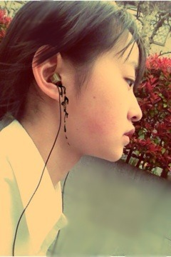

| 2012/04 13 Fri | 115回目*marika |
いつも読んでくださってる方、
初めて読んでくださった方、
コメントしてくださった方、
ありがとうございます！
まりかです
 べろべろべー
べろべろべー
べろべろべー
*****HaPPy BirThDAy*****
ひめか♡2012.4.13
おめでとうぅぅーーー‼
ひーめーかー

ついに同い年‼
かわいいかわいいひめか、
しっかり者で明るくて
ダンスの表現が上手で
強くて一生懸命。
見習いたいところ沢山あるよ。
...あー
これ以上見つめないでね。
おねーちゃん倒れちゃうよ

ひめかは私の妹♪
そして私はおねーちゃんー
 わーい
わーい
わーい
(ひめかブログより)←
本当におめでとう**
お昼に学校終わると電車が
がらんがらんすっきすっきなの。
座ってるとき、ぽかぽかするから寝ちゃう^^
静かですき

家まで歩いて帰る道
そんなに人がいない
風がきもちよい
あの時間はいちばんすきやわ

うたってても平気
スキップしてても平気

いろんなお花咲いてます。
全部きれい。
ぼーっと眺めてその後撮って見る。

がしかし、いちばん手前の花が虫に食われてる。
 ＜へたくそ!!
＜へたくそ!!
これよく見るお花だけどなんの花じゃろう。
顔面に風が当たってぶぉさぶぉさ

音漏れ

ほっぺな、かいたら赤くなってん
←
GalileoGalilei♪
東京事変♪
相対性理論♪
小声でおいでシャンプーうたってみたり

(...おーいで シャーンープー)
そいえば、今日クラス一人ずつ自己紹介した

みょーに緊張して口から心臓飛び出そうだったぜ。
「えー、こほん。
一年から来ました、伊藤万理華です。」
...... おうまいがっっっつ

しょっぱな間違えた

一年から来た
そりゃみんなそーや、
恥


..............
まりかは初選抜の歌はどんな歌が歌いたいですか？
まりかの好きな歌はなんですか？
 どんな歌でも‼
どんな歌でも‼
特別こんなのがいいとかないです。
好きな歌は、、
ゆるいロック
つぶやく感じの可愛らしいの
とかかっこいいアップテンポもすきです
べびたんが集めているマスコットは何ですか？
集めてない...かなぁx(
タメ語でコメントしていいのかな(´･_･`)？
いいよいいよー‼
いつも写真の加工がすごくかわいいけど、
どんなアプリ使ってるのか知りたいなぁ～(((o(*ﾟ▽ﾟ*)o)))
Pixlromatic
PuddingCam
Lens＋
など
ベビたんはキス魔なんか？笑っ

魔が付くほどじゃない笑
万理華ちゃんはよく狙われるの？
...なんでかね
⁈
私、まりかちゃんより年下なんです。年下によんでほしいあだ名があれば言ってください！！
ん？おねいちゃん
 とか先輩
とか先輩
とかね

...
調子乗りすぎな自分が...
 くそぅ
くそぅ
くそぅ
もちろん呼び捨てでも嬉しい
というかなんでも良いですっ
.............
明日はいよいよ静岡でのスタジアムライブ‼
アンダー全員でスタジアムを盛り上げるぞ

勇気は左の胸に。
明日も元気に頑張り⁇
まりかーーーーーー
‼
ぴょーん

おやすみなさい
まりか
コメント(125)
2012/04/13 22:36